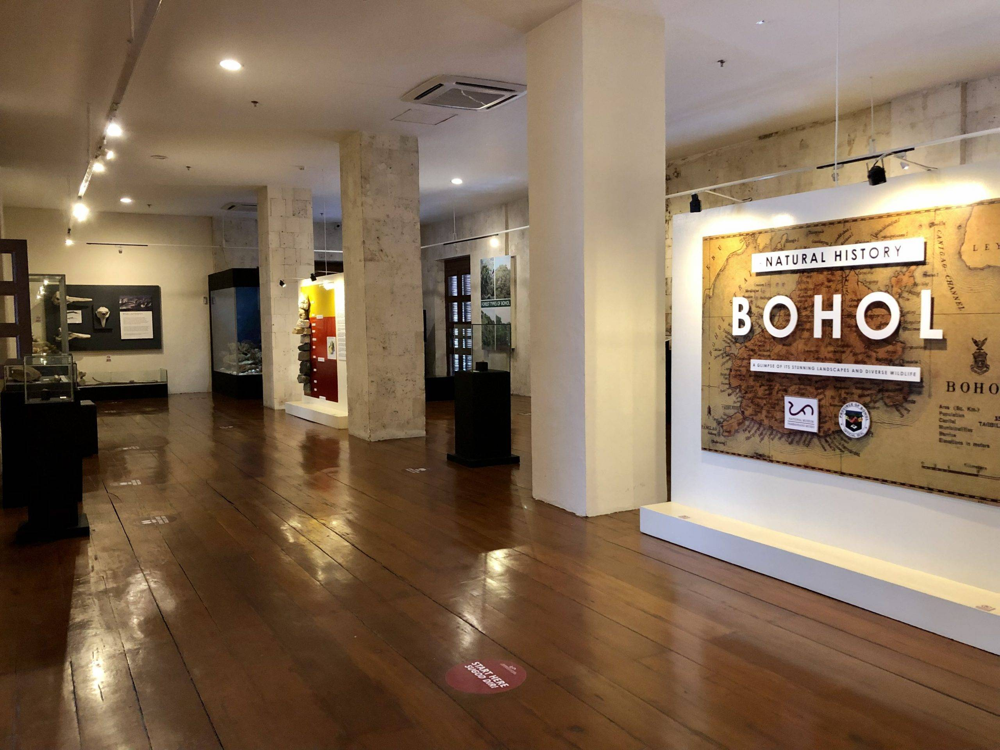

National Museum of the Philippines Bohol Area Museum or NMP - Bohol. Located in the city of Tagbilaran and housed in the old, historic Provincial Capitol Building. This magnificent structure from the Spanish colonial period in the late 1855 to 1860 testifies to the rich cultural heritage and people's spirit in Bohol.
Origin of Bohol Museum
It was originally intended to serve as a tribunal, prison, and military quarters for the Spanish forces that were then under the leadership of Captain Guillermo Kirkpatrich. The Provincial Capitol is located in Tagbilaran because it has the advantage of an excellent harbor, even though the town is smaller than Loboc, the previous capital. Built after the agreement of Kirkpatrich and Don Leon Torralba, who was the gobernadorcillo (mayor) of Tagbilaran on December 15, 1854, this partnership began a giant architectural project, an eye witness to many historic events during its construction years.
Provincial Capitol's design is rooted in traditional Spanish construction techniques:. The building is marked by huge uncut blocks of coral stone, supported by local materials, including banaba wood as beams and girders and bangkal wood for flooring. Having been refurbished several times, the building still retained its original form and style that must have been impressive in its own time. This resilience has been further underlined in its ability to withstand tests of time and the historical events that have unfolded in Tagbilaran.
The museum's exhibition is composed of 3 Galleries: Natural History Gallery, Pagbanhaw Gallery and Pagpauli Gallery.
More about the Bohol Museum
The National Museum Bohol's Natural History of Bohol gallery exhibit highlights the unique biodiversity and geology of Bohol, as well as its rare plants and famous animals. Nature patiently sculpted the ground over a period of more than 140 million years, creating the turtle-shaped island of Bohol. This exhibit offers a peek of Bohol's geology and paleontological richness through fossils and a diorama. Bohol is surrounded by rich marine ecosystems, including the Bohol Sea, which is home to at least 18 species of whales and dolphins. It is also regarded as a sanctuary for over a thousand different kinds of tropical flora and distinctive fauna, including the Philippine Tarsier. The Natural History Gallery provides us with a glimpse of Bohol's distinctive ecology and abundant biodiversity, which is essential to comprehending the island's evolution.
The National Museum Bohol's Pagbanhaw gallery exhibit explores the origins of Boholanos' Catholic faith as it is represented in their churches, the majority of which have been designated National Cultural Treasures and Important Cultural Properties by the Philippine National Museum. National cultural organizations, such as the National Museum of the Philippines (NMP), worked closely with stakeholders to lead the extensive restoration and reconstruction of Bohol's constructed legacy after the 7.2 magnitude earthquake.The churches at Guiuan, Samar; the watchtowers of Punta Cruz, Loay, and Panglao; and the churches in Dimiao, Alburquerque, Cortes, Panglao, and Loboc in Bohol have all been rebuilt under the direction of the NMP. To remind future generations of their legacy and the tenacity of the people whose faith and devotion have allowed these buildings to rise again from the ruins, the churches of Loon and Maribojoc are undergoing restoration and reconstruction.
The National Museum Bohol's "Pagpauli: A Homecoming Exhibition of National Artist Napoleon Abueva" honors the artistic abilities of Napoleon V. Abueva, the 1976 Boholano National Artist for Sculpture. In this exhibition, Bohol welcomes Abueva back home, referencing the Boholano custom of a homecoming. The exhibition, which is organized in collaboration with the Abueva family, showcases the National Artist's most extensive and noteworthy artwork from his personal collection in Duero, Bohol, and Quezon City. As the best Abueva exhibition in the nation, Pagpauli presents Abueva as a deeply religious man who was invested in human relations and dedicated to the modern ideal of form following function as he experimented, innovated, and experienced the materials he preferred to use and the world around him. This exhibition at the Philippine National Museum honors the memories of this renowned and prolific artist, who was born in Bohol.
So, whether one is an art enthusiast, a history buff, or a nature lover, the NMP Bohol is a must visit to enhance the understanding of this beautiful island and its rich legacy. The National Museum of the Philippines Bohol Area Museum is a resilient symbol of the island's history. Visiting this museum would give one a journey through time, and thus a unique glimpse into Bohol's past and its vibrant present.